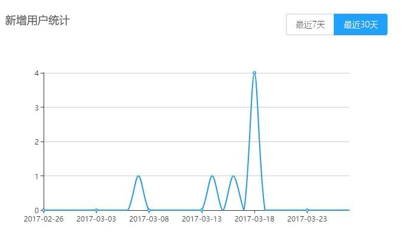

需求
统计最近N天的新增用户数量
分析
很幸运，MongoDB提供了聚合函数aggregate来完成这个任务。
实现
1. Model
{"_id" : 1, "createdTime" : ISODate("2017-03-07T06:40:58.337+0000"), ...},
{"_id" : 2, "createdTime" : ISODate("2017-03-08T06:40:58.337+0000"), ...},
{"_id" : 3, "createdTime" : ISODate("2017-03-09T06:40:58.337+0000"), ...}
|
2. 代码
db.users.aggregate(
[
{
$match: {
"createdTime": { $gt: ISODate("2017-01-17T23:41:04.372+0000") }
}
},
{
$project: {
day1 : {$substr: [{"$add":["$createdTime", 28800000]}, 0, 10] }
day2: { year: { $year: "$createdTime" }, month: { $month: "$createdTime" }, day: { $dayOfMonth: "$createdTime"} },
}
},
{
$group: {
_id: "$day1",
totalCount:{$sum: 1},
}
},
{
$sort: {
_id: 1
}
},
]
);
|
3. 说明
- $match : 查询，需要同find()一样的参数
- $project：包含、排除、重命名和显示字段
- $group：按照给定表达式组合结果
- $sort：按照给定的字段排序结果
- $sum：总结从集合中的所有文件所定义的值。后面可以是一个字段，表示对这个字段累加，如果是常数，表示每次增加的数值。
4. 返回结果
[{
"_id": "2017-02-24",
"totalCount": 1
},
{
"_id": "2017-03-07",
"totalCount": 1
},
{
"_id": "2017-03-16",
"totalCount": 1
}]
|
5. 效果

环境
- mongoose ^4.7.5
- Node.js ^7.0.0
- DEBUG:
参考